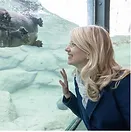
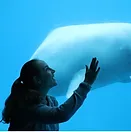
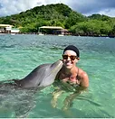

Project 3 6/04/2024
Membership Guidelines

Dr. Caroline DeLong
A Professor of Psychology at the Rochester Institute of Technology (Rochester, NY). She earned her Ph.D. in psychology with an emphasis on human and animal cognition from the University of Hawaii, and completed postdoctoral research at Brown University. She has conducted research with a variety of species, such as dolphins, bats, fish, otters, baboons, orangutans, penguins, and honeybees. She has collaborated with many zoos and aquariums, including a partnership with the Seneca Park Zoo for over a decade. She studies biosonar, visual and auditory perception, tool use, learning, memory, numerosity, and categorization in animals.
Dr. Heather Hill
A Professor of Psychology at St. Mary's University, San Antonio, TX, earned her Ph.D. in experimental psychology with emphases in development, cognition, and marine mammal behavior from the University of Southern Mississippi. She has collaborated with many facilities in the USA and around the world. The first 10 years of her marine mammal career involved research on the mother-calf relationship and social development of bottlenose dolphins in human care. In 2007, she added belugas to this research line, and killer whales in 2010. She has also conducted a variety of cognitive projects with large and small dolphins, belugas, sea lions, otters, penguins, and dogs.
Dr. Deirdre Yeater
A Professor at Sacred Heart University (SHU) in Fairfield, CT. She earned her Ph.D. in Experimental Psychology with a concentration in Marine Mammal Behavior and Cognition from the University of Southern Mississippi. She has studied several species of dolphins in the wild and in managed care for over 20 years. She began investigating beluga behavior and cognition in 2011, and in 2012 she added river otter research to her repertoire. Most recently she has become co-director of the SHU Canine Cognition Lab.
Temporany Members/"honorable Mentions"/
I'm thinking we use this section either as nothing OR we can include indivuals that we wouldn't be here today without. Such as Seaworld, the Seaworld member and more.
paragraph Here
Membership Guidelines
Academic Members
We welcome any students or faculty from academic institutions interested in conducting research on otters of any species. Undergraduate and graduate students interested in conducting research with ManyOtters must be a part of the collaborative team, i.e., not for a personal thesis or dissertation project.
Professional Members
We welcome any individual who is a member of a professional organization (e.g., an accredited zoo or aquarium) that cares for or conducts research with otters such as: zookeepers, veterinarians, behavioral researchers, welfare coordinators, and behavioral consultants to join as a professional member.